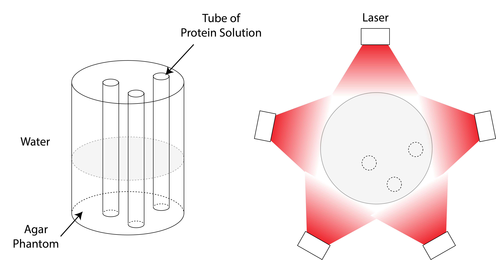
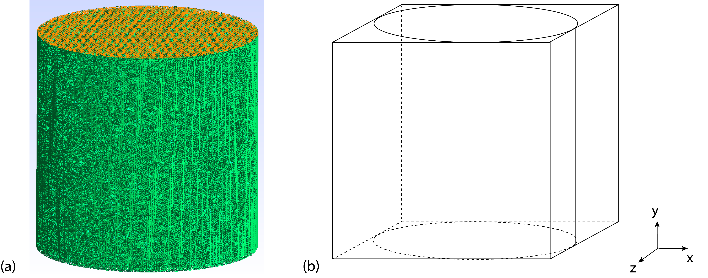

Computation of Light Fluence¶
In this section, we explain the computation of light fluence distribution as it is required to construct the forward model.
Diffusion Equation¶
Spatial distribution of light fluence is governed by absorption and scattering of photons inside the tissue. We precompute a fluence map \(\Phi^0(\mathbf{r})\) without the contribution of reporters and assume that \(\Phi(\mathbf{r}) \approx \Phi^0(\mathbf{r})\). This assumption is reasonable, owing to the small contribution of photo-switching reporters to the absorption map. The radiative transfer equation (RTE) accurately models the fluence distribution but is difficult to solve [162]. Its numerical counterpart, the Monte Carlo method, is computationally expensive [8]. To balance accuracy and efficiency, we adopt the diffusion equation (DE), a first-order approximation to the RTE [40]. This approximation is justified in our setup due to the diffuse nature of light at centimeter depths (PAT) and millimeter depths (AR-PAM), where photon scattering dominates absorption (\(\mu_a\ll \mu_s^{'}\)).
We adopt the following diffusion equation Eq. (47) complemented by the Robin-type boundary condition Eq. (48) which describes tissue/water interface to predict light fluence distribution \(\Phi(\mathbf{r})\) as
where \(\Omega\) is a 3D domain, and \(\mathbf{n}\) is the outward normal vector of the boundary. Illumination is described by a function \(S(\mathbf{r})\). The diffusion coefficient \(D(\mathbf{r})\) is defined by the known absorption coefficient \(\mu_a(\mathbf{r})\) and reduced scattering coefficient \(\mu^{'}_s(\mathbf{r})\) according to
Numerical Implementation of the Diffusion Equation¶
We numerically solve Eq. (47) and Eq. (48) via the finite element method, and we briefly summarize the key steps here. First, we multiply Eq. (47) with a test function \(v(\mathbf{r})\in H_1(\Omega)\) from the Sobolev space \(H_1(\Omega)\) and integrate over \(\Omega\) to obtain
Then we use integration by parts to get
Finally, we reorganize the terms and conclude with
We solve Eq. (52) using Fenicsx, an open-source library for numerical solution of partial differential equations [163, 164]. We provide a summary in Algorithm 2.
Algorithm 2 (Solving the Diffusion Equation via Fenicsx)
Input \(\mu_a(\mathbf{r}), \mu_s^{'}(\mathbf{r})\), and \(S(\mathbf{r})\) as 3D arrays
Define mesh and function space \(V\) of type continuous Galerkin of order 1
Convert \(\mu_a(\mathbf{r}), \mu_s^{'}(\mathbf{r})\), and \(S(\mathbf{r})\) to functions in \(V\)
Assemble Eq. (52) into a linear form \(a(\Phi, v) = L(v)\)
Solve the linear form to get solution \(\phi_h\)
Convert the finite-element solution \(\phi_h\) over a cylinder to a 3D box array \(\phi^{3\text{D}}\) that contains \(\phi_h\)
Slice a cross-section of \(\phi^{3\text{D}}\) to obtain a 2D fluence map \(\phi^{2\text{D}}\)
Output 2D array \(\phi^{2\text{D}}\)
Geometry and Meshes¶
Geometry of the Setup¶
The setup of our phantom experiment is illustrated in Fig. 23. The cylindrical agar phantom, which serves as the non-switching background, has a diameter of 27 mm and is submerged in water to match the refractive indices. We inserted tubes of diameter 580 \(\mu\)m and filled with solutions of photo-switching proteins inside the phantom. The illumination originates from five laser outlets that surround the body of the phantom such that incident light can be assumed homogeneous and diffuse at the surface of the cylinder body.


Fig. 23 Left: Depiction of the experimental setup of a tissue-mimicking phantom (ratio between the diameters of a tube and the phantom is exaggerated). Right: A 2D corss-section of the phantom with illumination from five laser outlets. The dotted circles represent locations of protein solution tubes.¶
We model the domain \(\Omega\) with a cylinder of height \(H\) and diameter \(L\) (see Fig. 24), which leads to
The incident homogeneous illumination on the phantom body is modeled by a function \(S(\mathbf{r})\) of constant intensity \(I_0\)
Meshes¶
We represent the domain \(\Omega\) with two types of meshes of uniform mesh elements. The first type is a grid composed of boxes with size determined by the physical size \((X, Y, Z)\) of \(\Omega\) and the number of sampling points \((N_{\text{x}}, N_{\text{y}}, N_{\text{z}})\) in each dimension: \((X/N_{\text{x}}, Y/N_{\text{y}}, Z/N_{\text{z}})\). This type is used in the construction of the forward model and the unmixing algorithm (due to matrix operations). The second type is a finite element mesh that discretizes the cylinder domain directly into tetrahedrons with mesh size \(\Delta s\), which we choose to be \(\max(X/N_{\text{x}}, Y/N_{\text{y}}, Z/N_{\text{z}})/2\) to reach a balance between computational accuracy and speed (see Fig. 24 (a)). This is done using Gmsh, an open-source 3D finite element mesh generator [165]. This type of mesh is used to solve the diffusion equation. For computational speed, we precompute and save the 3D mesh with defined physical sizes and only load it when needed.
The relation between these two meshes is illustrated in Fig. 24 (b).


Fig. 24 (a) Finite-element mesh of a cylinder generated using Gmsh. (b) Relation between the grid and the finite-element mesh, box mesh tightly fits the cylinder.¶
The conversion between two meshes is necessary when we compute the fluence using optical parameter maps defined on a grid and when we cast the solution from the finite element mesh to the grid. The output of the fluence computation is a 2D cross-sectional image of the original 3D map, which we use to construct the forward model (see Fig. 25 for details).